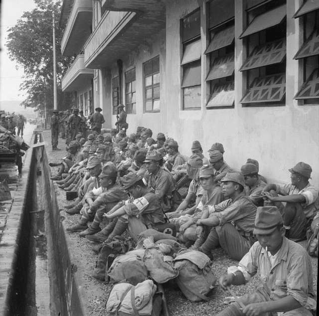
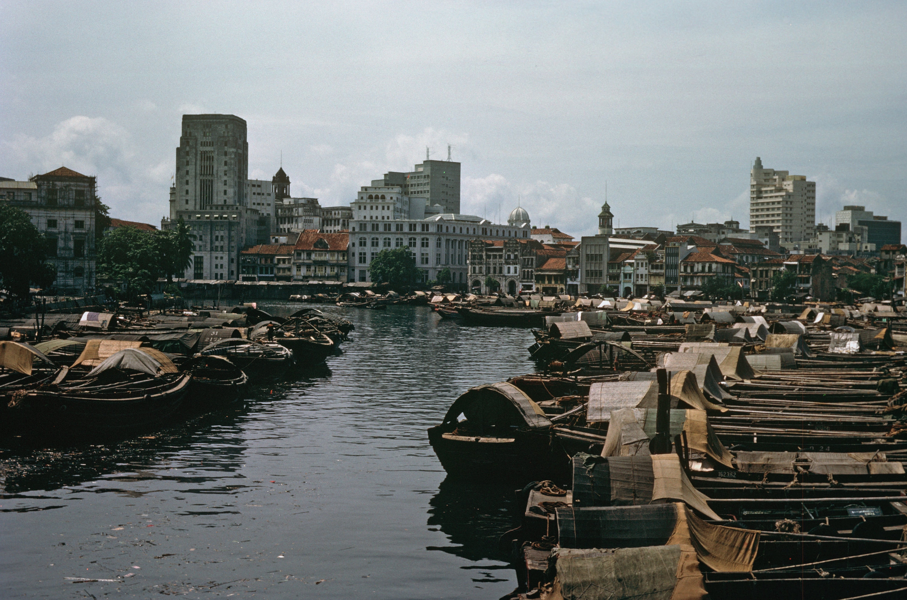

History
The History of Modern Day Singapore
Here you can learn about the rich history of Singapore. Learn about it's early days as a British Colony, all the way into it's rise as an independent and prospering nation.
Singapore during the 1940s-1960s
Singapore was a British colony until 1942 WWII where the japenese gained control of the region due to their naval superiority which caused the British to forfeit the island and city to them in which it remained in japenese control until 1945. In 1959 the official and nominated elements were eliminated, and singapore became self-governing, although Britian still retained control of defense and foreign policy. Singapore then joined the federation of Malaysia on its formation in September 1963.
Singapore during the 1970s to 2010s
In the 1970s Singapore persued an aggressive policy of economic growth based primarily on export manufacturing and trade. Singapore was a founding member of the Association of Southeast Asian Nations (ASEAN) in 1967 in 1967, and by 1980 it had emerged as one of ASEAN's leaders. The People's Action Party (PAP) continued to dominate Singaporean polictics after Lee stepped down as a prime minister in 1990, and between 1981 and 1991 opposition parties gradually increased their number of seats in parliament from one to four. In 2008-09 Singapore was caught in the global recession which made them begin to recover only in 2010. what was important to that recovery was the growth of the services sector, notably tourism, which benefited greatly after two large resort complexes that included newly legalized gambling casinos opened in 2010.